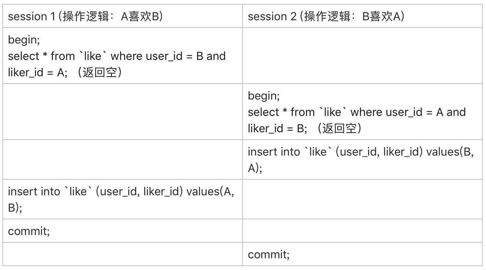

MySQL 实战45讲 学习笔记
MySQL是Coder必备知识，最近我也是趁着自己有时间，看过一遍网络知识后，再回过头来看下MySQL，看MySQL的时候用到了Margin Note3，确实挺好用的，推荐学习时使用，电脑端使用book xnote。我会把思维导图丢到网页上来，也是方便我使用电脑查看。
MySQL学习推荐课程：MySQL 实战 45 讲
问题手记
1、事务隔离级别引申出来的可见性问题，若记录都未存在，无行锁，并发插入时无法按照预期进行更新；
1 | CREATE TABLE `like` ( |
业务上有这样的需求，A、B两个用户，如果互相关注，则成为好友。设计上是有两张表，一个是like表，一个是friend表，like表有user_id、liker_id两个字段，我设置为复合唯一索引即uk_user_id_liker_id。语句执行逻辑是这样的：
以A关注B为例：
第一步，先查询对方有没有关注自己（B有没有关注A）
select * from like where user_id = B and liker_id = A;
如果有，则成为好友
insert into friend;
没有，则只是单向关注关系
insert into like;
但是如果A、B同时关注对方，会出现不会成为好友的情况。因为上面第1步，双方都没关注对方。第1步即使使用了排他锁也不行，因为记录不存在，行锁无法生效。请问这种情况，在MySQL锁层面有没有办法处理？
如图：
A、B之间没有关注关系（没有记录），事务开始时，查询为空。
对业务来说，双方已经互点关注了，已经不是喜欢了，而是需要在friend表中插入记录。
如图示中，在进行查询时，选择的数据加上行锁也没啥用，毕竟在查询的时候数据都还不存在。
首先，要给“like”表增加一个字段，比如叫作 relation_ship，并设为整型，取值1、2、3。
值是1的时候，表示user_id 关注 liker_id; 0b01
值是2的时候，表示liker_id 关注 user_id; 0b10
值是3的时候，表示互相关注。 0b11
然后，当 A关注B的时候，逻辑改成如下所示的样子：
应用代码里面，比较A和B的大小，如果A<B，就执行下面的逻辑
1 | mysql> begin; /*启动事务*/ |
如果A>B，则执行下面的逻辑
1 | mysql> begin; /*启动事务*/ |
这个设计里，让“like”表里的数据保证user_id < liker_id，这样不论是A关注B，还是B关注A，在操作“like”表的时候，如果反向的关系已经存在，就会出现行锁冲突。
把正反向的数据都转化到一行记录里面，而不是分开（通过A、B UserID的大小）
然后，insert … on duplicate语句，确保了在事务内部，执行了这个SQL语句后，就强行占住了这个行锁，之后的select 判断relation_ship这个逻辑时就确保了是在行锁保护下的读操作。
事务在执行第一条语句时开启，开启后，碰到
insert … on duplicate语句（先判断记录是否存在，存在即update，不存在即insert）,修改语句，占用该行锁直到事务结束。（占不住则意味着要等待别人把该记录的行锁释放，也就是另外的事务结束）
操作符 “|” 是按位或，连同最后一句insert语句里的ignore，是为了保证重复调用时的幂等性。
insert ignore into，重复则忽略，不重复则插入。（重复时只是报警，不会报错）
这样，即使在双方“同时”执行关注操作，最终数据库里的结果，也是like表里面有一条关于A和B的记录，而且relation_ship的值是3， 并且friend表里面也有了A和B的这条记录。
这里的问题就是事务隔离引申出来的问题，“可见性”。当数据都还未出现呢，此时不管是当前读，还是快照读都得眼瞎。
解决此问题，依然还是用到了行锁，精妙的地方是，利用了insert … on duplicate语句，创建与更新同时存在，后面的查询语句去更新验证结果，由于两阶段锁协议，所以查询语句也是带锁的。
本文标题：MySQL 实战45讲 学习笔记
文章作者：小师
发布时间：2022-06-24
最后更新：2023-02-25
原始链接：chunlife.top/2022/06/24/MySQL-实战45讲-学习笔记/
版权声明：本站所有文章均采用知识共享署名4.0国际许可协议进行许可